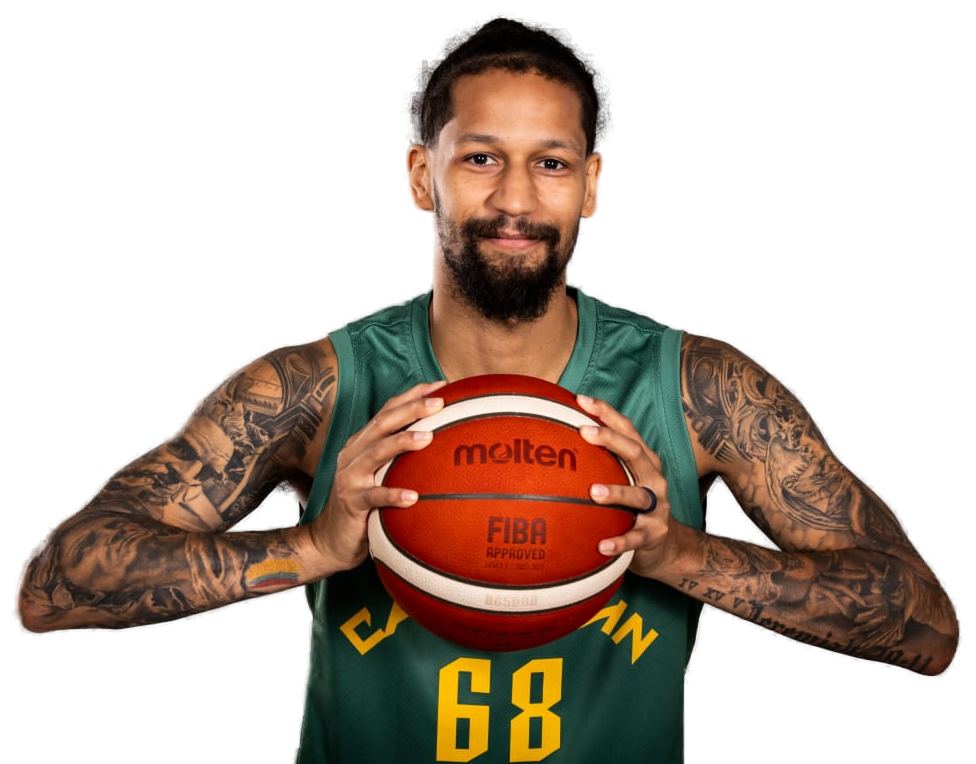

Mobile-first
29 M de connexions mobiles au Cameroun. Les capsules vidéo de 5-10 min sont optimisées pour smartphone et réseaux modestes.
La plateforme officielle d'e-learning des entraîneurs camerounais. 5 niveaux de certification alignés FIBA WABC, accessibles partout, sur mobile, et 100 % gratuits pour tous.

De l'animateur Mini-Basket à l'entraîneur de haut niveau : un cursus progressif en 5 paliers, aligné sur le référentiel mondial FIBA WABC et porté par deux experts FIBA.
Conçue pour le contexte camerounais : mobile-first, données légères, contenus en français et en anglais, animée par les instructeurs FIBA WABC du pays.
29 M de connexions mobiles au Cameroun. Les capsules vidéo de 5-10 min sont optimisées pour smartphone et réseaux modestes.
Schémas interactifs et plays animés inspirés FIBA WABC, FastModel et Hoop Coach. Comprenez vraiment ce que vous lisez sur le tableau.
Évaluez vos acquis. 70 % minimum pour valider. Retour pédagogique immédiat sur chaque question, et possibilité de recommencer.
Alignement avec les exigences internationales : nos modules reprennent fidèlement le référentiel FIBA WABC (World Association of Basketball Coaches) pour des compétences directement comparables à celles des entraîneurs formés à l'étranger.
Une véritable rampe de lancement vers les diplômes officiels FECABASKET (Animateur, Moniteur, Niveaux 1-2-3) : capsules ciblées, quiz d'auto-évaluation et études de cas alignés sur les épreuves fédérales. Vous arrivez préparé·e, vous validez sereinement.
Découvrez Lions et Lionnes Indomptables, sélections jeunes et tous les Camerounais qui portent les couleurs.
Le championnat élite féminin camerounais : clubs, classements, vivier des futures internationales.
Le championnat élite masculin camerounais : clubs phares, joueurs marquants, calendrier de la saison.
Photos officielles · Source : www.fecabasket.com
Chaque module se termine par un quiz de 10 questions à choix multiples. Bonne réponse immédiate, explication pédagogique, possibilité de recommencer.
Cinq phases successives pour passer de 50 entraîneurs formés/an à 500+ certifiés à l'échelle nationale.
Installation de la plateforme Moodle, charte graphique FECABASKET, infrastructure VPS, AO hébergeur. Lancement du sous-domaine elearning.fecabasket.com en juillet-septembre 2026.
Tournage et production des capsules vidéo Animateur + Moniteur + Niveau 1. Intégration paiement Campay (Orange Money + MTN MoMo).
Lancement dans 2 ligues : Centre et Littoral. Retour terrain, ajustements pédagogiques, validation par les experts FIBA.
Extension aux 10 régions. Production des Niveaux 2 et 3. Objectif : 500 entraîneurs certifiés d'ici fin 2028.
Recertification triennale, ouverture diaspora et zone CEMAC francophone, partenariats FIBA WABC.